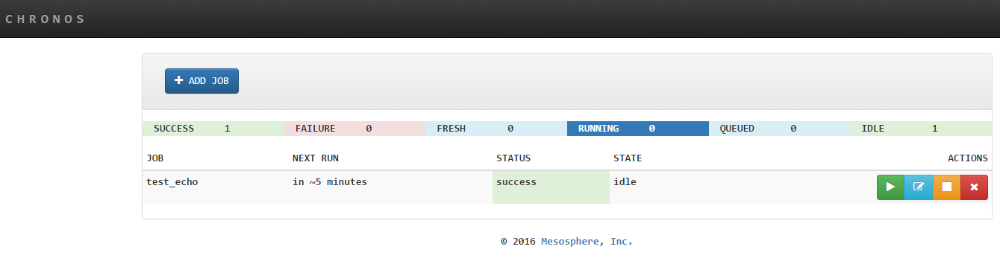
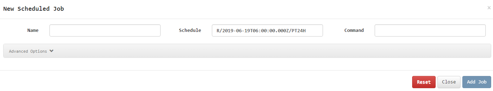
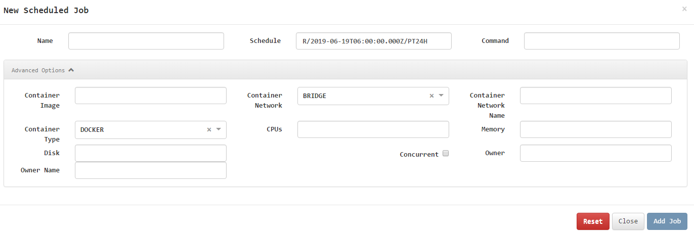
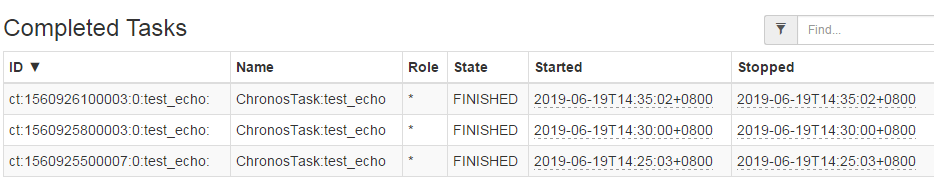

Chronos
Official: https://mesos.github.io/chronos/
Replace crontab in mesos cluster
Chronos
A fault tolerant job scheduler for Mesos which handles dependencies and ISO8601 based schedules
Introduction
Chronos is a replacement for cron. It is a distributed and fault-tolerant scheduler that runs on top of Apache Mesos that can be used for job orchestration. It supports custom Mesos executors as well as the default command executor. Thus by default, Chronos executes sh (on most systems bash) scripts.
Chronos can be used to interact with systems such as Hadoop (incl. EMR), even if the Mesos slaves on which execution happens do not have Hadoop installed. Chronos is also natively able to schedule jobs that run inside Docker containers.
Chronos has a number of advantages over regular cron. It allows you to schedule your jobs using ISO8601 repeating interval notation, which enables more flexibility in job scheduling. Chronos also supports the definition of jobs triggered by the completion of other jobs. It supports arbitrarily long dependency chains.
working process
Internally, the Chronos scheduler main loop is quite simple. The pattern is as follows:
- Chronos reads all job state from the state store (ZooKeeper)
- Jobs are registered within the scheduler and loaded into the job graph for tracking dependencies.
- Jobs are separated into a list of those which should be run at the current time (based on the clock of the host machine), and those which should not.
- Jobs in the list of jobs to run are queued, and will be launched as soon as a sufficient offer becomes available.
- Chronos will sleep until the next job is scheduled to run, and begin again from step 1.
Chronos maintains task status through zk, and tasks are randomly assigned to a mesos slave node to run.
Install
The premise is that zk and mesos have been deployed
$ docker run --net=host - e PORT0=8080 - e PORT1=8081 mesosphere/chronos:v3.0.0 --zk_hosts $zk_ip:2181 --master zk://$zk_ip:2181/mesos
The first port is the http port
use
Visit http://localhost:8080

Add task

Just need to configure
- Task name
- time interval
- Shell command/script to execute
The Shell command can also be replaced by starting the Docker container, as shown below:

Time interval format example:
R/2019-06-19T14:40:00.000+08:00/PT5M
The above configuration is executed every 5 minutes under Beijing time.
After the task is executed, the task execution record can be found on mesos

Task definitions and execution status can be found on zk
[zk: localhost:2181(CONNECTED) 7] get /chronos/state/state/J_ $job_name
You only need to complete a general Shell script. This Shell script first downloads an HDFS directory (task directory, including scripts and configurations, etc.) to the local according to the parameters, and then enters the directory to execute the commands in the parameters to achieve distributed task scheduling;
$ do_job.sh $hdfs_path $cmd
Reference: https://hub.Docker.com/r/mesosphere/chronos/